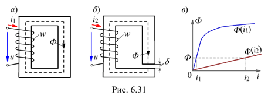

6.4.1.4. Роль ферромагнитного сердечника катушки
Отметим, что значение магнитного потока Фm = U/(4,44 fw) зависит от приложенного напряжения U, его частоты f и числа витков w обмотки. Например, при U = 220 В и f = 50 Гц, Фm » 1/w (wФm @ 1) и при U = const не зависит от магнитных свойств материала сердечника, в т. ч. от наличия, например, в магнитопроводе воздушного зазора d (рис. 6.31, б).

Действительно, в цепях а и б (рис. 6.31) возбуждается одинаковый магнитный поток Ф. Но можно ли убрать ферромагнитный сердечник. Нельзя, так как при наличии воздушного зазора d в магнитной цепи для создания одинакового потока Ф нужен ток i2 (рис. 6.31, в), значительно превышающий ток i1 (в зависимости от длины зазора и свойств ферромагнетика).